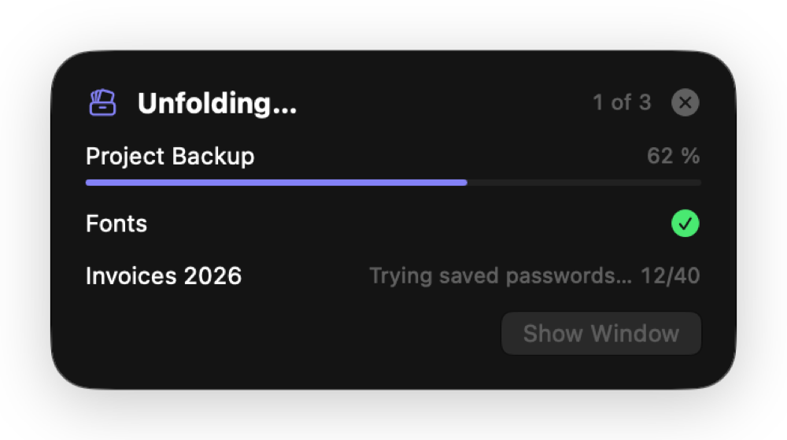
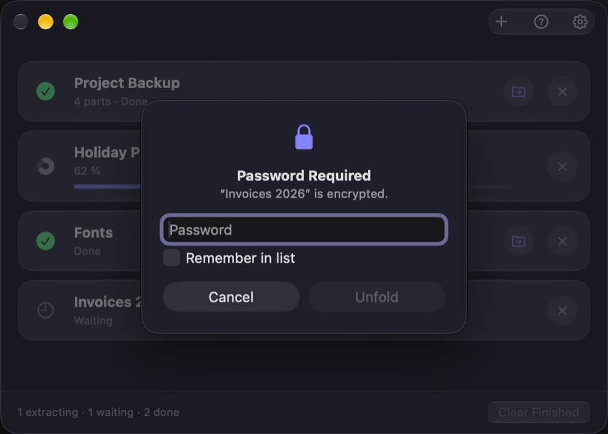
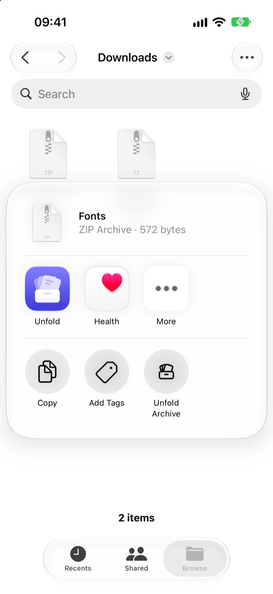
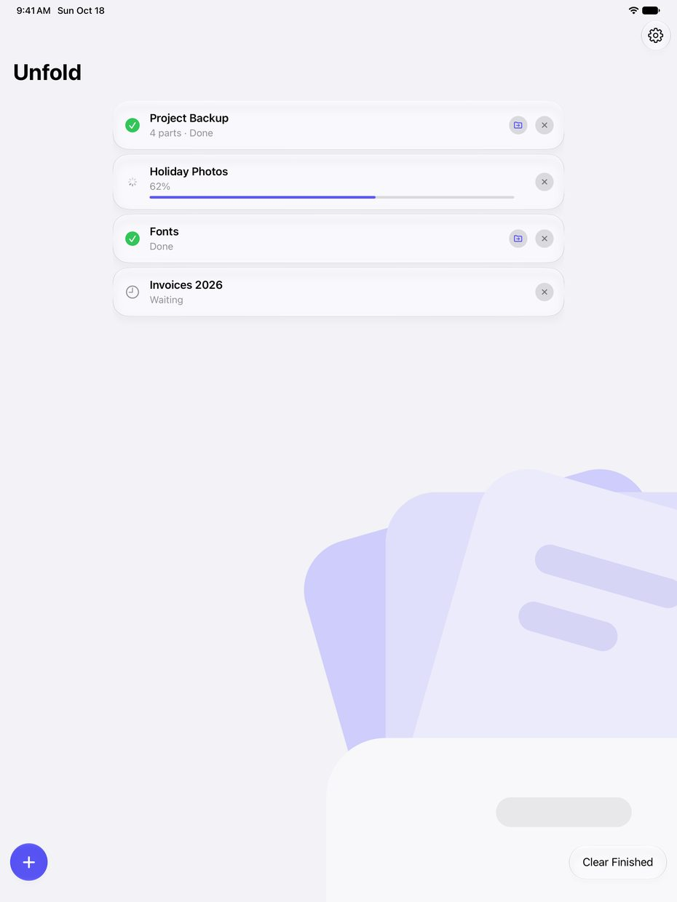
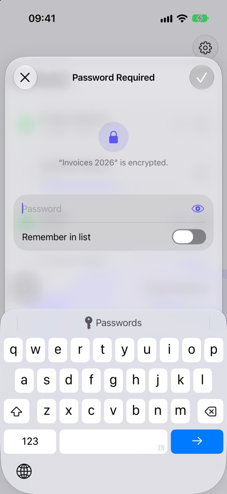

Unfold from Finder
Right-click an archive, or several, and choose where the files go:
- Unfold Here puts the contents next to the archive.
- Unfold to Folder puts them in a new folder named after it.
- Unfold to… asks where.
Or double-click, drop archives on the window, use the Quick Action or Shortcuts.

Every part, one archive
Movie.part1.rar to part12.rar, or old .r00 volumes: Unfold sees every part of a set as one archive, whichever part you open. It shows as one row, and if a part is missing, it says which: “Part 3 is missing.”
4 parts · Done
A small panel, then it's gone
Started from Finder or by a double-click, Unfold shows only a small progress panel at the top right and quits a few seconds after it's done. Click Show Window to keep it open.

Saved passwords, tried for you
Unfold tries your saved passwords from top to bottom before it asks, and moves the one that worked to the top. Type a new one once and tick Remember in list.
The list stays in your Keychain.

Unfold from Files
In Files, touch and hold an archive, or select several, and tap Share › Unfold Archive. The files appear next to the archive.
Or tap + in Unfold, or open an archive from Mail, Safari or any app with Open in Unfold.

Every part, one archive
Movie.part1.rar to part12.rar, or old .r00 volumes: Unfold sees every part of a set as one archive, whichever part you open. It shows as one row, and if a part is missing, it says which: “Part 3 is missing.”
Allow your Downloads folder once, and multipart sets there unfold complete.
4 parts · Done
Unfold doesn't even open
Share › Unfold Archive shows only a small panel with the progress and closes by itself when it's done. Open Unfold when you want the list: the newest archives on top, Clear Finished at the bottom right.

Saved passwords, tried for you
Unfold tries your saved passwords from top to bottom before it asks, and moves the one that worked to the top. Type a new one once and turn on Remember in list.
The list stays in your Keychain.

And the details
Files where you expect them
One item lands next to the archive; several get a folder named after it. No loose files, no folder inside a folder.
Straight to the result
Click a finished row, or its folder button, and Finder opens the new folder or selects the file.
A double-click is enough
Make Unfold the default app for archives in Settings › General, and every archive opens with it.
Tidy up after
Open the folder right away, or move the archive to the Trash after success. All parts of a set go together.
Shortcuts
The Unfold Archives action takes files and returns the extracted folders, for your own automations.
Opens what you download
RAR 1.5 to RAR5, ZIP with AES, 7z, TAR with GZ, BZ2, XZ, ZST and LZ4, ISO, CAB and more.
Questions
I don't see “Unfold Here” when I right-click in Finder.
Turn on Unfold's Finder extension: System Settings › General › Login Items & Extensions › Finder (under Extensions) › Unfold. The Unfold Quick Action works without it (right-click › Quick Actions).
Is Unfold really free?
Yes, every feature, with no ads, no subscription and no in-app purchases.
“Part 3 is missing.”
A multipart archive needs all parts in the same folder with the same name (Movie.part1.rar, Movie.part2.rar …). Download the missing part, put it next to the others and try again.
Get Unfold
As a download for Mac or from the Mac App Store, and from the iOS App Store for iPhone and iPad. All are free and have every feature. The download is signed and notarized by Apple, and offers new versions when you open it.
Open the DMG and drag Unfold to Applications. For the Finder menu, turn on System Settings › General › Login Items & Extensions › Finder › Unfold.
Buy me a coffee
Unfold is free. If it saves you time and you'd like to say thanks, you can buy me a coffee.